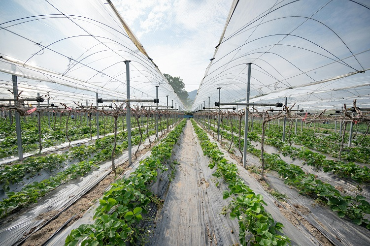
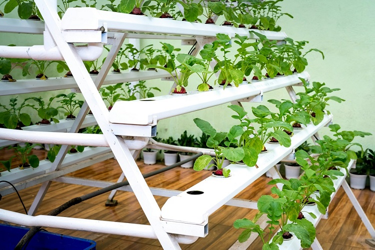
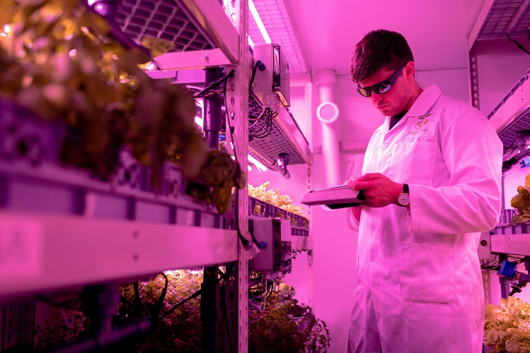
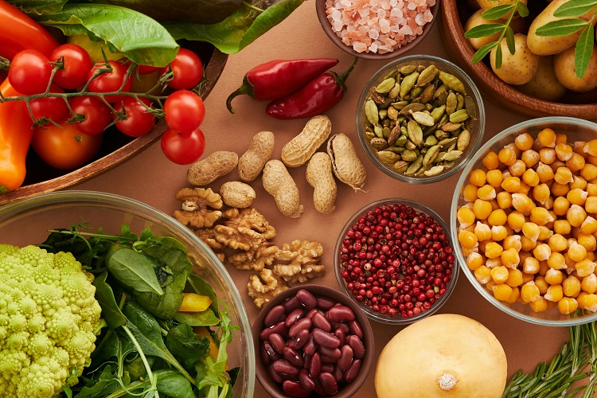

Innovative Solutions to Combat Hunger
Sustainable Agriculture Practices
The solution of Vertical farming lets agricultural producers raise their crops across multiple stacked levels or vertical columns primarily situated within cities. The technique operates within confined conditions that enable metropolitan zones to grow food products without occupying extensive acreage. land. Vertical farms operate from buildings and warehouses as well as by utilizing rooftops. This helps bring fresh produce The method uses limited land space to enable crop production near urban areas where normal farming space is scarce thus limiting the need for long-distance food transportation. These systems enable reduced prices at the market as well as decreased environmental emissions.
Sustainable agriculture depends heavily on the support of farmers in nearby areas together with their surrounding communities. Small-scale farming which serves local demands is the preferred investment over industrial farming at large scale. The farms currently serve earnings before considering human needs. Knowledge and practical tools given to local farmers lead to their empowerment. The agricultural systems enable higher food production with environmental support. Mounting this effort creates opportunities that reduce food scarcity amid hunger problems. The distribution of food resources becomes more accessible and affordable for people who are acutely in need.
Vertical Farming and Urban Agriculture
Vertical farming represents a fresh farming approach which arranges plants into multiple levels or vertical structures within city spaces. The limited-space technique enables cities to maximize their food production capacity through non-extensive land usage. land. The design of vertical farms enables installation in both buildings and warehouses and rooftops. This helps bring fresh produce. The practice works in limited agricultural areas to create extra farming locations while cutting down expenses from food transport across long distances. The method offers reduced expenses for food production alongside reduced environmental emissions from carbon.
Cities gain self-food-sustainability through the practice of urban agriculture that incorporates vertical farming systems. Through urban agriculture people receive the chance to establish food production in densely populated areas. This can improve food security, The establishment of green spaces creates both fresh food accessibility and addresses areas lacking in grocery stores. With the rising global population, Vertical farming solutions in urban environments provide a solution to feed more individuals through edible production systems that decrease rural agricultural pressures.
The Role of Technology in Food Security
The advancement of technology contains a vital function for enhancing food security levels through optimized and dependable food production procedures. Modern farming tools, Modern farming equipment that applies GPS systems together with automated irrigation systems allows farmers to conserve water along with fertilizer through optimized resources management. growing more food. Scientific progress in biotechnology resulted in creating plants that display increased disease resistance. Decreased crop losses because of extreme weather conditions enable farmers to maintain continuous food supply and increased production efficiency.
Tech advances manage food transportation alongside storage operations which leads to lower food discard and higher accessibility of food supplies. For example, digital platforms Technology allows farmers to sell directly to consumers which reduces food expenses by eliminating intermediary distribution cost. The deployment of cold storage systems leads to food preservation because of this technology. The preservation techniques enabled by technology extend food quality for extensive periods thus enabling better commercial transportation of perishable products. The new technological advancements serve as essential elements for achieving their objectives. The problem of food scarcity receives special attention through technology in areas with limited resources and inadequate food distribution structures.
Nutrition-Focused Approaches
The hunger relief strategies that focus on nutrition aim to deliver healthy food as well as necessary sustenance despite the food shortage and balanced. The organizations shift their distribution strategy from basic staples such as rice or maize toward nutritious dietary items. Such methods work to enhance the health state of both individuals and their communities. The nutrition program provides nutritious food containing vitamins and minerals and proteins as a solution to nutritional deficiencies. Nutritional deficiencies appear frequently in food insecure areas because of their particular nutritional deficiencies.
The fundamental aspect of hunger relief includes both the supply of food together with educational programs about nutrition. Education programs about healthy nutrition should include lessons about meal preparation as well as dietary knowledge for local communities. The acquisition of knowledge about producing one's own nutritious food brings lasting advantages for general health. Hunger relief succeeds when groups get proper nutrition-based care tailored to individual requirements. Such relief programs simultaneously decrease hunger and enhance community health while enabling their lasting development.
Reduction of Food Waste

The widespread discarding of food during global food production stands as a major source of the hunger problem. Food waste The reduction of wasted food seeks to challenge food discarding practices through enhanced storage approaches alongside enhanced food tagging strategies and leftover use promotion. consumers to use leftovers. The effort to reduce hunger requires effective programs that rescue surplus food products from being wasted and distribute them among the needy. This way, food that would Utilizing surplus food which otherwise would end up as waste helps provide nourishment to the needy population thus simultaneously decreasing both hunger-related problems and negative environmental consequences.
The reduction of food waste profoundly relies on making people more alert about the extent of waste occurring between farms and households and every step of the supply chain. The reduction of food waste depends on consumers purchasing needed amounts of food and using all their purchased food items before donating surplus portions to minimize waste produced by the food system. By working together Strategies aimed at reducing food waste will maximize available resources leading to improved food availability for the community.